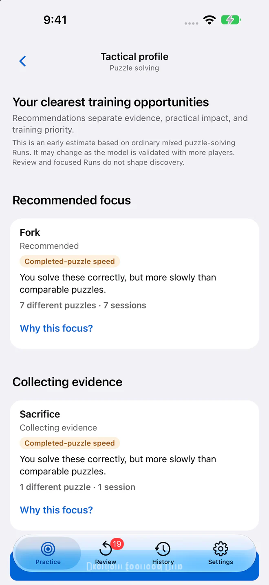
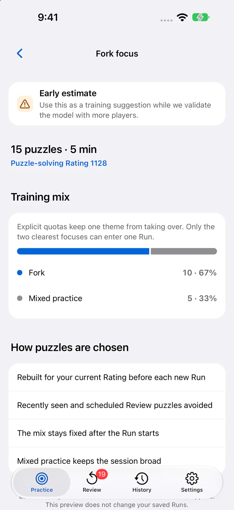

Problemas de xadrez para prática focada.
Resolva Sprints curtos ajustados ao seu Rating. Compare lances no Duelo de Setas e revisite erros com a Revisão programada.
Grátis. Offline. Sem anúncios nem conta.


A Revisão programada traz de volta os problemas que merecem outro olhar.
Problemas errados e incertos retornam na hora certa. Rejogue qualquer posição livremente para ver a linha de novo sem alterar seu cronograma de Revisão.

Séries Focadas começam com uma estimativa inicial e seguem suas escolhas.
Veja a prévia de uma Série Focada a partir de uma estimativa inicial no seu Perfil Tático, ou escolha você mesmo temas, ritmo e dificuldade.


Prática privada com mais espaço para o tabuleiro.
O Chessticize funciona offline no celular, sem anúncios nem conta. No iPhone e no iPad, a sincronização privada opcional via iCloud mantém seu progresso unido nos seus dispositivos Apple e pode ser desativada a qualquer momento.